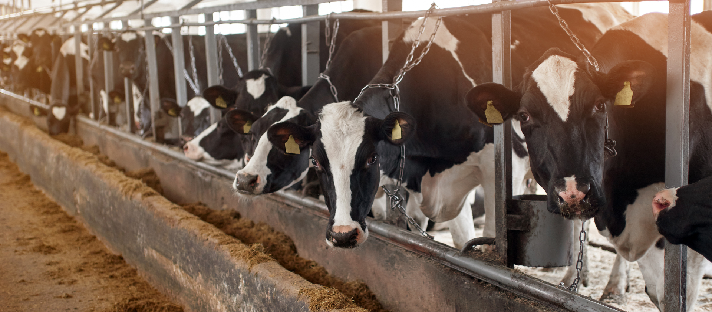

Reproduction Training for Cattle Management
Welcome to the Reproduction Training for Cattle Management! Reproduction is a pivotal aspect of cattle management, playing a crucial role in the sustainability and profitability of a cattle operation. Effective reproduction training is essential for cattle managers to optimize herd genetics, enhance productivity, and ensure the long-term success of their enterprise. This training program focuses on imparting knowledge and skills related to the reproductive cycle, breeding techniques, and overall reproductive health of cattle.
Training Objectives:
- Understanding Reproductive Physiology
- Breeding Strategies
- Heat Detection and Estrus Synchronization
- Pregnancy Diagnosis
- Reproductive Health Management
- Calving Management
- Genetic Improvement